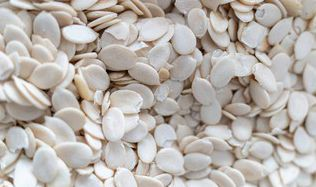

BITTER KOLA (GARCINIA)

BITTER KOLA (GARCINIA) : Is an edible seed produced by bitter kola tree. It is found mostly in west/central Africa and Asia Bitter kola have numerious health benefits and can be use in treatment of hepatitis, infections, etc and to boost immune system
GINGER(RHIZOMA)
GINGER/RHIZOMA : Is a commonly used as spices in many parts of the world. Ginger have numerious health benefits due to its anti-inflammatary,anti-nausea and other properties .it can be use in manufacturing of traditional medicine and food supplements
CASHEW NUTS
.jpg)
CASHEW NUTS: Is a kidney shaped seed, sourced from cashew tree it is found in tropical Africa and other parts of the world it contains mineral acids ,rich in nutrients and offer several health benefits
GARLIC (ALLIUM SATIVUM)
GARLIC(ALLIUM SATIVUM) : It is a specie of bulbous flowering plants in the genus Allium Garlic have been used for culinary and medicinal purpose in many cultures for many centuries it is a source of organosulfur compound
TURMERIC

TURMERIC: Is a plant in the ginger family,it is a golden-orange spice known for adding color,flavor and nutrients to food. It have numerious health benefits
GARRI FLOOR (WHITE AND YELLOW GARRI)

GARRI FLOOR : Is the most important food in Africa, it is been processed from starchy cassava root There are two type white and yellow Garri it have various nutrients
YAM (DIOSCORES)
Yam (DIOSCORES): Is the second most popular root/tuber crop in Africa,it is important crop for food and contains numerious nutrients like carbohydrate, vitamins etc
OGBONO SEED AND EGWUISI SEED


OGBONO SEED : Is been sourced from Africa bush mango tree ,the seed is used to thicken soup and have a unique flavour with numerious health benefits EGWUISI SEED : Also is been sourced from native melon plant in Africa,the seed is used to cook soup, stews and other dishes it contains numerious nutrients like protein,zinc,iron and fats etc.